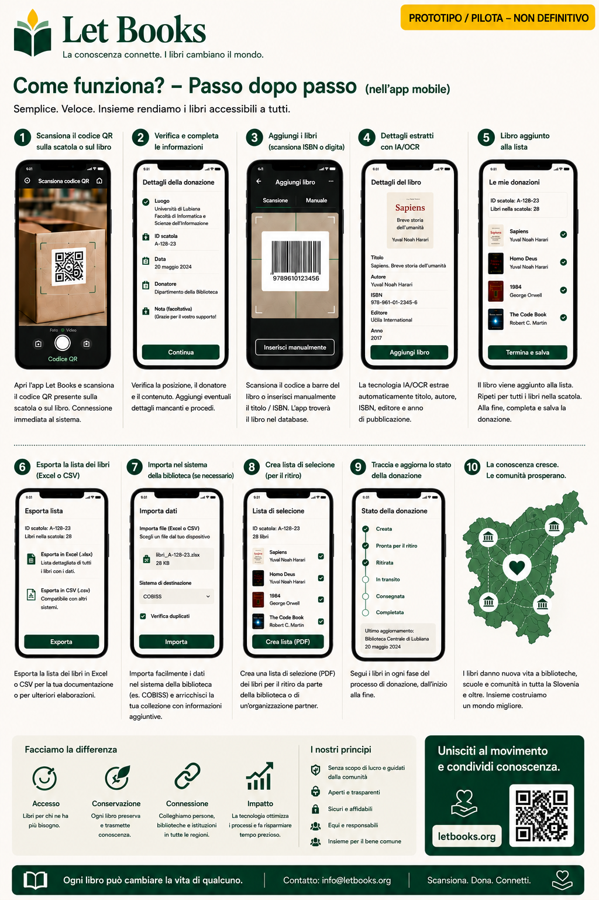

Testi e flussi di lavoro in questa pagina descrivono la direzione del progetto, non un'implementazione di produzione completa.
Guida per individui
Cataloga la prima scatola senza trasformare tutto in un grande progetto.
Questa pagina è per donatori privati, famiglie, volontari e piccole organizzazioni che vogliono conservare libri importanti e poi offrirli e ritrovarli più facilmente.

Quando questa guida fa per te
- Hai libri a casa, in deposito o in ufficio.
- Vuoi sapere cosa c'è in ogni scatola prima di offrire qualcosa.
- Ti serve un flusso mobile con meno digitazione.
- Più avanti potresti donare a una o più biblioteche.
Come appare il successo
- Scanni una scatola e ne vedi il contenuto.
- Aggiungi un nuovo libro in pochi secondi.
- Esporti una lista pulita per la revisione.
- Ritrovi le copie richieste quando arriva il momento del ritiro.
Flusso rapido di lavoro
Il primo passaggio deve essere abbastanza veloce per scaffali reali e scatole reali.
Scansiona le scatole QR
Apri il contesto corretto del luogo prima dell'inserimento.
Fotografa la copertina
La copertina resta il riferimento visivo principale per sfogliare.
Scansiona o inserisci ISBN
Se è visibile, usalo. Se non lo è, salva e arricchisci più tardi.
Salva e continua
L'inserimento rapido non deve richiedere una bibliografia completa prima del libro successivo.
Esporta per la revisione
Prepara un lotto per la biblioteca o il partner.
Crea la lista di ritiro
I libri richiesti vengono raggruppati per stanza, scaffale e scatola.
Cosa è più importante registrare
Titolo, autore, anno quando visibile, stato della copia e posizione esatta. Sono i dati che rendono la donazione praticabile più avanti.
AI come assistente, non autorità
Se OCR o suggerimenti di metadati saranno attivati in seguito, trattali come suggerimenti che richiedono verifica umana.
Esempio: Una famiglia eredita la biblioteca tecnica di un professore, etichetta le scatole, fotografa le copertine, esporta un lotto per revisione e in seguito ritrova esattamente le copie richieste dalla biblioteca.